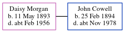

John Baldock
[ Home ] | [ Calendar ] | [ Surnames Index ] | [ Errors ] | [ Family History ]John Baldock, the husband of Geraldene A Goodhew (the fourth cousin on the mother's side of Nigel Horne), and married Geraldene (with whom he had 2 surviving children Andrew Nelson and Mark) in Surrey, England around Aug 19691.
Citations
- England & Wales Marriages 1837-2005 - Findmypast
Media
England & Wales marriages 1837-2005 Transcription - BMD-M-1969-3-AO-000793-135
England & Wales marriages 1837-2005 - BMD/M/1969/3/AO/000093/087
Family Tree
Generated by ged2site. Last updated on Jul 3, 2024